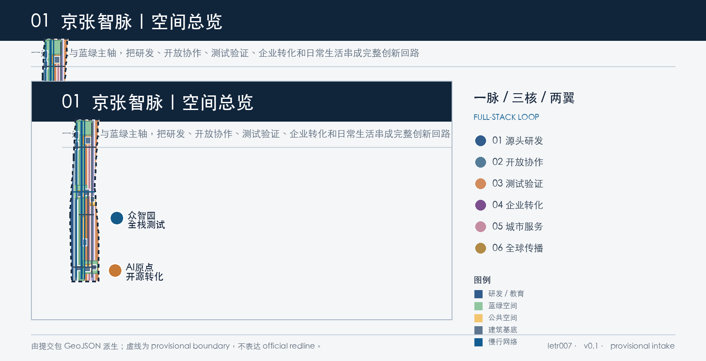
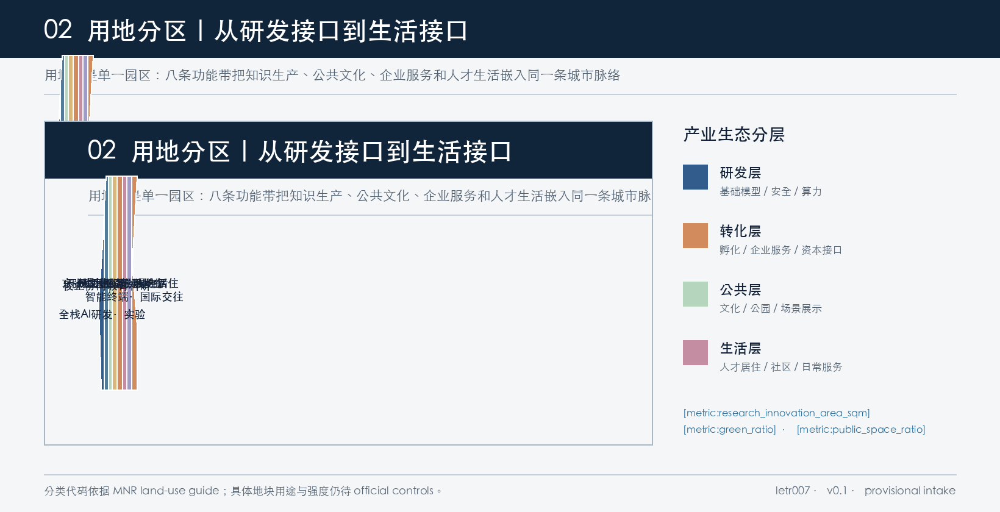
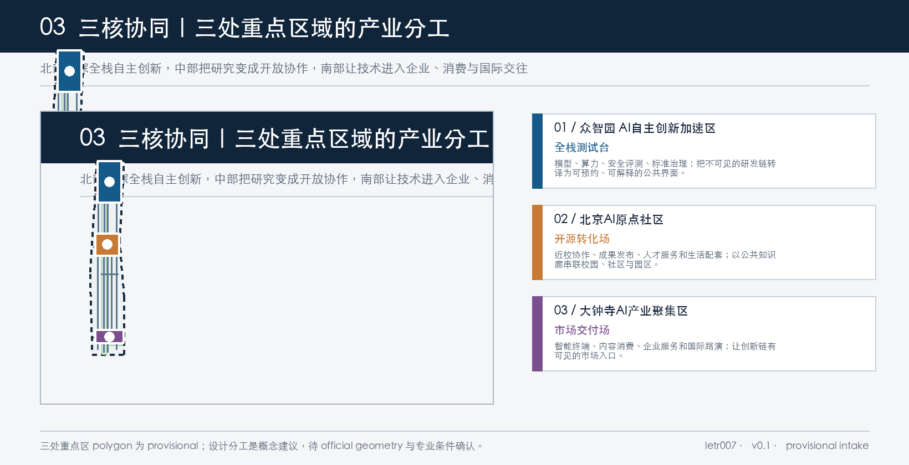
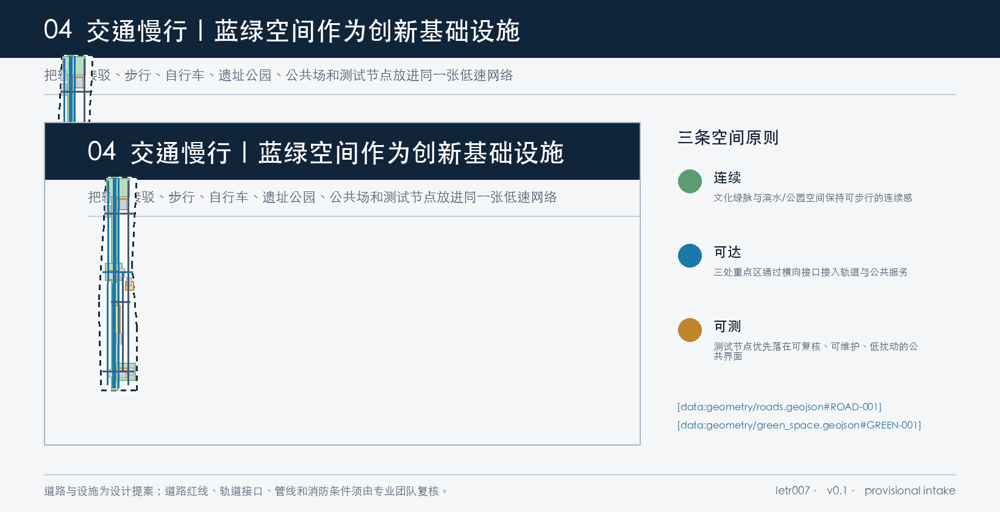
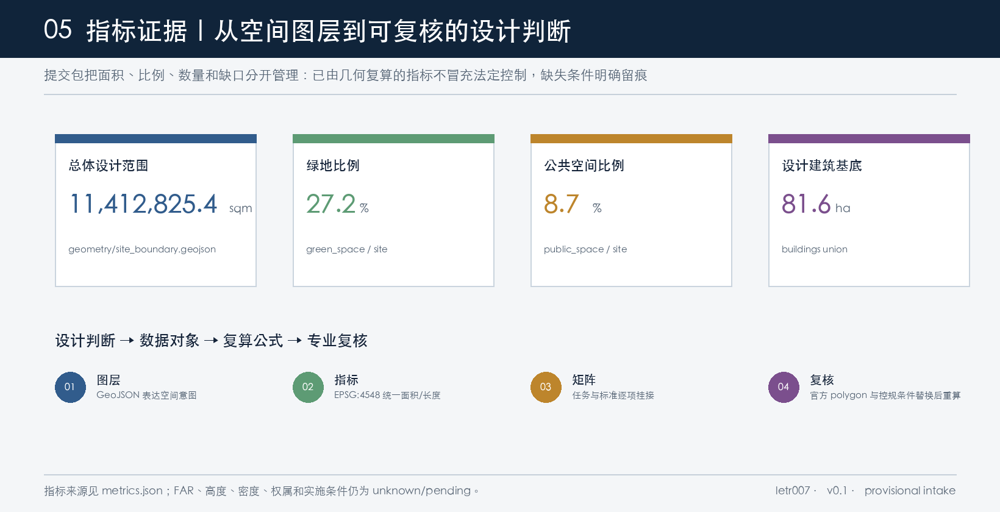

京张智脉：AI产业生态与全栈创新城市设计
以京张文化与蓝绿公共空间为共享主轴，组织众智园全栈测试、AI原点开源转化、大钟寺市场交付三核，形成研发—协作—测试—转化—生活—传播的 AI 创新回路。
京张智脉：AI产业生态与全栈创新城市设计
设计依据与资料清单
本方案以北京市规划和自然资源委员会海淀分局公告作为项目名称、三层范围、面积约值、重点区域与设计任务的正式依据。[source:OFFICIAL-ANNOUNCEMENT] 以 brief/site-package/ 中的 design_brief.json、allowed_design_space.json、枚举、范围、标准快照和 schema 作为结构化约束。[source:SITE-PACKAGE] data/source_registry.json 区分 formal-ready、provisional-only 与资料缺口；本方案据此只使用公开或已清权资料，不把临时 polygon、案例网页或概念判断升级为官方红线、法定控规、投资承诺或工程结论。[source:SOURCE-REGISTRY]
面向智能体任务书要求方案回应三大定位——百年京张文化带、都市 AI 生活体验带、AI 融合创新带——以及五大功能、三区两翼、六项 agent 任务。[source:AGENT-TASKBOOK] 专业表达遵循城市设计管理、控规编制审批、用地分类和本项目公告的边界要求。[standard:PROJECT-OFFICIAL-ANNOUNCEMENT] [standard:PROJECT-AGENT-OPEN-CALL-TASKBOOK] [standard:MOHURD-URBAN-DESIGN-MEASURES] [standard:MOHURD-CONTROL-DETAILED-PLANNING] [standard:MNR-LAND-USE-CLASSIFICATION-GUIDE] [standard:MOHURD-ARCH-DESIGN-DEPTH-2016]
当前没有可直接核验的官方精确 polygon。提交包使用仓库维护的 provisional boundary 与三处 provisional key areas，仅用于 AI 生成、图示、设计讨论和 intake 自检；它们不是 official redline、精确面积、土地权属或工程边界。[source:BOUNDARY-SOURCE] [source:KEY-AREA-SOURCE] 正式边界发布后，需要同步重算 site_boundary.geojson、key_areas.geojson、land_use.geojson、buildings.geojson、roads.geojson、green_space.geojson、public_space.geojson、phasing.geojson、全部图片、PDF、HTML 与 metrics.json。[depth:existing_conditions_diagnosis] [depth:risk_missing_data]
来源与假设分别登记在 sources.json 和 assumptions.json；proposal.md 是主体成果，GeoJSON/metrics 是可复算证据，矩阵是任务与标准覆盖证据。[source:PROCESSED-FACT-PACK]

三层范围工作框架
**统筹研究范围**约 43.6 平方公里，承担创新带产业生态、三区两翼、文化叙事和未来城市形态研究；**总体设计范围**约 11.4 平方公里，承担城市更新总体结构、用地、建筑、交通、市政、蓝绿空间和实施项目；**重点区域范围**约 368.4 公顷，包含众智园 AI 自主创新加速区、北京 AI 原点社区和大钟寺 AI 产业聚集区，承担规划综合实施方案层级的方向性深化。[source:OFFICIAL-ANNOUNCEMENT] [data:geometry/site_boundary.geojson#SITE-001] [data:geometry/key_areas.geojson#PROV-KEY-001] [metric:coordinated_research_area_sqm] [metric:overall_design_area_sqm] [metric:key_area_count] [depth:three_level_scope_framework]
三层范围不是三组孤立图纸，而是从“产业链判断”逐级落到“空间结构”和“场景节点”。统筹层回答 AI 产业为什么在这里形成；总体层回答研发、公共文化、企业服务和生活服务如何共存；重点层回答三处区域分别承接创新链的哪一段。当前提交的总体设计面积由 provisional polygon 在 EPSG:4548 下复算为 [metric:site_area_sqm]，不能替代公告约 11.4 平方公里的正式面积，也不能作为专业评分的精确面积依据。
三层范围的空间关系是“一脉、三核、两翼、一环”：一脉是京张铁路文化与蓝绿公共空间主轴；三核是北部全栈测试、中部开源转化、南部市场交付；两翼是中关村科技服务翼与小月河场景赋能翼；一环是研发—开放协作—测试验证—企业转化—城市服务—全球传播的全栈创新回路。[data:geometry/green_space.geojson#GREEN-001] [data:geometry/public_space.geojson#PUBLIC-001] [data:geometry/phasing.geojson#PHASE-001] [depth:overall_spatial_structure]

统筹研究范围产业与未来城市研究
1. 概念、命名与视觉识别
总名称建议为 **“京张智脉”**，英文为 **Jing-Zhang AI Commons**。中文中的“智”指 AI 时代的知识生产与公共智能，“脉”指铁路线性遗产、蓝绿廊道和持续运转的创新关系。命名体系采用“节点名称 + 功能副标题”：众智园·全栈测试台、AI 原点·开源转化场、大钟寺·市场交付场、京张档案·公共知识廊、智脉环·开发者步行线。
Logo 方向采用一条横向轨道线穿过三个开放节点，节点由不封闭的圆环构成，表示“历史线索—开放贡献—持续迭代”而不是封闭的企业徽标。建议基础色为京张铁蓝、清河绿、档案金和算力橙；导视、展板、数字界面使用同一套线宽和节点编号。该方向是原创概念，不调用既有企业商标、人物、商业字体或未清权图像。[source:AGENT-TASKBOOK] [depth:overall_spatial_structure]
2. 全栈创新生态：六个公开案例的机制转译
案例只作为公开背景比较，不能替代海淀本地资料，也不能据此编造企业名单、投资额或政策承诺。[source:CASE-MILA] [source:CASE-STATION-F] [source:CASE-PITTSBURGH] [source:CASE-MARS] [source:CASE-LAUNCHPAD] [source:CASE-TORONTO-AI-SUPERCITY]
| 公开案例 | 可观察机制 | 对“京张智脉”的空间/运营转译 | | --- | --- | --- | | Mila，蒙特利尔 | 研究共同体与 venture 转化并置 | AI 原点设置研究交流、成果发布和转化服务的公共界面；不复制其组织规模 | | Station F，巴黎 | 集中式创业 campus、合作伙伴和创始人服务 | 在 AI 原点与大钟寺设置共享服务清单、路演、法务和人才服务节点 | | Pittsburgh Innovation District | 高校、医疗、文化、创业和公共空间协同 | 用京张公园作为跨机构共享层，将高校、企业、社区和文化资源连成慢行网络 | | MaRS， 多伦多 | 城市创新 hub 连接初创、企业、投资者和公共议题 | 在中关村科技服务翼形成企业服务、场景需求和公共问题对接机制 | | LaunchPad @ One-North，新加坡 | startup nodes、living lab、pilot adoption 和数字孪生测试 | 众智园建立轻量测试协议；场景必须有人工复核、授权和退出条件 | | Toronto AI Supercity | 研究、人才、基础设施、企业和负责任采用形成区域叙事 | 用一张“研究—人才—算力—数据—场景—治理”生态图谱支撑全球传播 |
由案例抽象出的海淀机制不是“建一个园区”，而是建立四个可重复的接口：**知识接口**（高校/研究→开源）、**验证接口**（模型/产品→公共测试）、**交易接口**（企业/资本/场景→转化）、**生活接口**（人才/居民/访客→日常体验）。四个接口分别落在 land_use.geojson 的研发、开源文化、企业服务、社区与生活分区。[data:geometry/land_use.geojson#LU-001] [metric:research_innovation_area_sqm] [depth:land_use_layout]
3. 三区两翼与五大功能
众智园聚焦“AI 全栈自主创新体系”和安全治理；AI 原点社区聚焦“世界级 AI 创新生态”和近校成果转化；大钟寺聚焦“智能原生新业态”和企业/国际交往。中关村科技服务翼提供人才、法务、知识产权、投融资、标准和国际沟通等共享服务；小月河场景赋能翼将医疗、教育、交通、商业、绿色空间和社区服务变成可试验的城市接口。
五大功能对应为：AI 全栈自主创新体系、世界级 AI 创新生态、AI+ 场景赋能新范式、智能化 AI 活力城市、AI 治理全球话语权。它们在空间上通过“一脉”共享公共层，在产业上通过“全栈回路”互相导流，在运营上通过开放日、测试协议、贡献记录和年度评估形成可持续机制。[source:AGENT-TASKBOOK] [standard:PROJECT-AGENT-OPEN-CALL-TASKBOOK] [data:geometry/roads.geojson#ROAD-001] [depth:municipal_new_infrastructure]
总体设计范围城市更新与控规深度城市设计
1. 总体结构与用地
建议形成八条相邻的功能带：全栈 AI 研发与实验、校企协同教育科研、京张遗址公园绿地、开源文化与成果发布、AI 企业服务与产业转化、社区服务与 AI 生活实验、人才生活与混合居住、智能终端与国际交往商业服务。八类用地使用项目提供的国土空间分类代码表达，例如科研 0802、教育 0804、公园绿地 1401、文化 0803、商业服务业 05、社区服务 0702、居住 0701。[standard:MNR-LAND-USE-CLASSIFICATION-GUIDE] [data:geometry/land_use.geojson#LU-001] [data:geometry/land_use.geojson#LU-008] [depth:land_use_layout]
这些分区不是对现状权属或法定用途的判断，而是把产业生态翻译为可审查的空间接口。land_use.geojson 完整覆盖当前 provisional site boundary，分区之间共享边界、不留空隙；[metric:research_innovation_area_sqm] 表示方案中的研发/教育科研空间，不代表批准建设规模。公共绿地和公共空间指标分别为 [metric:green_ratio] 与 [metric:public_space_ratio]，用于比较设计意图，待 official geometry 和绿地口径确认后重算。
2. 建筑更新与强度边界
建筑图层设置十个概念性建筑基底：众智园研发楼群、安全评测与标准实验室、企业加速器；AI 原点近校转化工坊、混合服务楼、人才生活服务组团；大钟寺智能经济办公、智能终端展示街、站城接驳节点；中段京张记忆与开源档案馆。每个对象标注 retain、renovate 或 new_build 作为更新研究起点。[data:geometry/buildings.geojson#BLDG-001] [data:geometry/buildings.geojson#BLDG-009] [depth:retain_renovate_demolish]
建筑基底总量以 [metric:building_footprint_area_sqm] 复算，设计对象数量为 [metric:design_building_count]。方案不填写 FAR、建筑高度、建筑密度、退线或消防间距的伪精确值；对应指标在 metrics.json 中保持 unknown，并由 [metric:floor_area_ratio]、[metric:building_height_m]、[metric:building_density] 标示资料缺口。[standard:MOHURD-CONTROL-DETAILED-PLANNING] [standard:MOHURD-URBAN-DESIGN-MEASURES] [depth:development_intensity_controls] [depth:height_massing_character]
3. 更新方法
更新优先级遵循“先公共层、后产业层；先低扰动、后结构性更新；先验证、后扩展”的顺序。保留对象优先进入文化叙事和公共知识网络；改造对象优先接入共享服务、开放协作和人才生活；新建对象只作为功能缺口的概念性补充。任何拆除结论都不在当前包内作出，因现状建筑、产权、文保和工程资料缺失，应由专业团队以官方资料和公众参与结果确认。[depth:retain_renovate_demolish] [depth:development_intensity_controls]
重点区域详细设计
三处重点区 polygon 均为 provisional constraint；下述空间动作是供专业团队深化的概念建议，不是审批结论。[data:geometry/key_areas.geojson#PROV-KEY-001] [data:geometry/key_areas.geojson#PROV-KEY-002] [data:geometry/key_areas.geojson#PROV-KEY-003] [depth:three_key_area_detailed_design]
1. 众智园 AI 自主创新加速区：全栈测试台
**定位**：把基础模型、算力、数据合规、安全评测、标准治理与低碳环境组织为可协作的研发街区。空间上建议形成“研发组团—标准广场—清河生态创新界面”三段关系：研发建筑提供安静、可扩展的工作环境；标准广场提供可参观的规则、协议和贡献展示；清河界面承载低扰动的绿色算力、雨洪和公共体验叙事。
**建筑与更新**：概念图层设置研发楼群、实验室和企业加速器，优先研究保留建筑的共享化改造与新建研发接口，建筑高度、体量、屋顶和天际线待正式控规、景观和文保条件确认。[data:geometry/buildings.geojson#BLDG-001] [data:geometry/buildings.geojson#BLDG-002]
**交通与公共空间**：以京张文化慢行主轴和东西协同接口把园区接入总体网络，建议将标准治理广场作为预约制测试、工作坊和公共讲解的入口；不以传感器追踪个人，不把测试活动写成已批准运营。[data:geometry/roads.geojson#ROAD-001] [data:geometry/public_space.geojson#PUBLIC-002]
2. 北京 AI 原点社区：开源转化场
**定位**：以近校创新为起点，建立高校成果、开源贡献、创业服务、人才生活和公共文化之间的日常接口。建议把 AI 原点开源共享场、近校转化工坊、混合服务楼和人才生活节点串成步行可达的“知识—生活”短回路。
**建筑与更新**：优先研究现有建筑的首层开放、共享会议、成果发布和小规模试验空间；人才生活服务组团只是方向性供给，不表达具体建设强度或权属安排。[data:geometry/buildings.geojson#BLDG-004] [data:geometry/buildings.geojson#BLDG-006]
**交通与公共空间**：用校企缝合步行轴和中段公共服务微循环连接校园、园区、公园和社区，公共知识长廊承担铁路记忆、开源贡献和成果发布的连续展示。[data:geometry/roads.geojson#ROAD-005] [data:geometry/public_space.geojson#PUBLIC-003] [data:geometry/public_space.geojson#PUBLIC-001]
3. 大钟寺 AI 产业聚集区：市场交付场
**定位**：为 AI 企业、智能终端、内容消费、数据要素服务和国际交流提供城市型市场界面。建议围绕大钟寺站接驳节点、智能终端展示街、国际路演客厅和办公组团组织“四象限步行—路演—交付—生活”的复合场景。
**建筑与更新**：概念建筑图层将办公、零售和交通接驳对象分别标注为保留、改造和新建研究对象；企业名称、招商结果、投资规模和实际入驻均不作推断。[data:geometry/buildings.geojson#BLDG-007] [data:geometry/buildings.geojson#BLDG-009]
**交通与公共空间**：建议把南部横向接口作为站城一体化的公共优先界面，将四象限步行连通、非机动车停放、短时接驳和低扰动展示统一研究；道路红线与站点工程条件必须由专业交通团队核验。[data:geometry/roads.geojson#ROAD-006] [data:geometry/roads.geojson#ROAD-008] [data:geometry/public_space.geojson#PUBLIC-004]

AI 创新生态、人才画像与 AI+ 场景
1. 五类用户画像
| 用户 | 主要任务 | 空间响应 | 数据/治理边界 | | --- | --- | --- | --- | | 开源开发者 | 发布、协作、测试、贡献记录 | AI 原点开源共享场、公共知识廊、夜间协作空间 | 不采集个人轨迹；贡献记录自愿、可撤回 | | 初创团队 | 算力入口、原型测试、企业服务 | 众智园测试台、共享实验室、企业加速器 | 数据、算力、设备和场景均需授权 | | 产业企业访客 | 路演、采购、招聘、国际接待 | 大钟寺路演客厅、终端展示街、站点接驳 | 企业案例、标识和商业数据须清权 | | 周边居民与家庭 | 通勤、休闲、社区服务、低扰动体验 | 遗址公园、社区服务带、AI 生活实验街 | 不将居民画像用于商业推荐；提供人工窗口 | | 高校师生与研究者 | 课程、科研、成果转化、跨校协作 | 近校转化工坊、教育科研带、步行缝合轴 | 校园数据、科研成果和未公开研究需授权 |
2. 十张 AI 场景卡
以下场景均为概念建议；每张卡应在后续专业与运营深化中补齐授权、性能、安全、人工复核和退出机制。[source:AGENT-TASKBOOK] [depth:municipal_new_infrastructure]
1. **开源发布厅**：AI 原点社区；服务开发者和高校；展示代码贡献、模型说明和成果发布；只使用公开或自愿提交材料，人工审核发布内容。 2. **安全治理沙盒**（产业测试）：众智园标准广场；服务模型团队和治理研究者；在隔离环境进行安全评测与规则演示；不接入个人数据，专家人工复核后公开摘要。 3. **端侧算力驿站**（产业测试）：公共服务节点；服务初创团队和社区服务；验证低带宽、低能耗的公共服务原型；能源、设备和网络条件待核，出现异常可人工关闭。 4. **AI 慢行诊断**（产业测试）：京张遗址公园与慢行主轴；服务居民、游客和交通团队；用聚合公开数据识别断点与无障碍需求；不识别个人，现场观察和人工踏勘为最终依据。 5. **国际路演客厅**：大钟寺；服务企业、访客和国际社区；提供多语种成果展示与路演预约；不虚构招商结果，活动需另行取得公共空间与版权许可。 6. **清河低碳创新廊**（产业测试）：众智园清河界面；服务研发者、居民和绿色技术团队；展示雨洪、低碳、步行与算力关系；生态和水务条件待专业核验。 7. **近校成果转化街**：AI 原点；服务师生、法务、知识产权和创业团队；提供咨询、发布和转化接口；科研成果必须获得权利人授权。 8. **数据要素会客厅**：大钟寺；服务企业和公共机构；解释授权、审计、数据质量和数字资产；不承诺交易，不存储未授权数据。 9. **AI 生活服务街**：社区与商业交界；服务居民和人才；提供医疗、教育、法律与生活服务导览；高风险事项保留人工服务和专业责任边界。 10. **全球 AI 活动周路线**：从京张档案、AI 原点到众智园、大钟寺；服务开发者、居民和访客；组织开发者节、场景开放和成果路演；活动日程与赞助需另行审批和清权。
3. 四个产业测试验证场景
产业测试采用“小范围、可退出、可解释、人工复核”四项门槛：安全治理沙盒验证模型安全说明，端侧算力驿站验证低能耗服务，AI 慢行诊断验证公共空间问题识别，清河低碳创新廊验证蓝绿空间与算力叙事。四者均不把试验结果写成全面部署，也不以非公开数据作为必要条件。[metric:test_validation_scenario_count] [data:geometry/public_space.geojson#PUBLIC-002] [data:geometry/roads.geojson#ROAD-001]

用地、建筑规模与拆改留方案
用地采用项目枚举与自然资源部分类逻辑，八类功能带覆盖当前 provisional site boundary，方案重点不是改变权属，而是建立产业链所需的空间接口。[standard:MNR-LAND-USE-CLASSIFICATION-GUIDE] [data:geometry/land_use.geojson#LU-001] [data:geometry/land_use.geojson#LU-008] [metric:research_innovation_area_sqm] [depth:land_use_layout]
建筑基底以十个概念对象表达研发、实验、孵化、办公、混合、教育、人才生活、零售和交通接驳等类型。[data:geometry/buildings.geojson#BLDG-001] [metric:building_footprint_area_sqm] [metric:design_building_count] 现状建筑、产权、消防、结构、文保和市政资料缺失，因此只提出保留/改造/新建的研究顺序，不提出拆除结论。[depth:retain_renovate_demolish]
方案将开发强度分为三层：已知的是公告面积与提交图层复算；建议的是研发、公共、企业服务和生活的空间关系；待确认的是 FAR、高度、密度、退线、停车、消防和市政容量。[metric:floor_area_ratio] [metric:building_height_m] [metric:building_density] [standard:MOHURD-CONTROL-DETAILED-PLANNING] [depth:development_intensity_controls] [depth:height_massing_character]
交通、轨道、市政与公共服务设施
交通建议以低速复合网络为底：京张文化慢行主轴承担南北贯通；西侧骑行环、东侧企业服务支路和三条横向接口承担东西缝合；轨道接驳线连接重点区与站点。roads.geojson 共表达 [metric:design_road_segment_count] 个概念性网络段，长度以 [metric:road_network_length_m] 复算，但不等同于道路红线、开口、断面或交通组织批准。[data:geometry/roads.geojson#ROAD-001] [data:geometry/roads.geojson#ROAD-008] [metric:road_network_length_m] [depth:traffic_rail_slow_parking]
公共服务建议设置 AI 企业服务、人才服务、社区服务、端侧算力、分布式能源解释和传统市政接口的复合节点。能源、网络、排水、防洪、消防、无障碍、停车和管线资料均需补齐后进行工程协调；当前 constraints.geojson 只记录资料缺口，不画成法定控制线。[data:geometry/constraints.geojson#CONSTRAINT-001] [depth:municipal_new_infrastructure]
蓝绿空间、公共空间与城市风貌
京张遗址公园是公共主轴，不是单纯景观背景。绿地层由遗址公园文化绿脉、众智园清河生态创新界面、AI 原点共享公园和大钟寺站前绿色会客厅组成；公共空间层由公共知识长廊、标准治理广场、开源共享场、国际路演客厅和人才服务节点组成。[data:geometry/green_space.geojson#GREEN-001] [data:geometry/green_space.geojson#GREEN-004] [data:geometry/public_space.geojson#PUBLIC-001] [data:geometry/public_space.geojson#PUBLIC-004] [metric:green_space_area_sqm] [metric:public_space_area_sqm] [metric:green_ratio] [metric:public_space_ratio] [depth:blue_green_public_space]
城市风貌建议建立三层叙事：铁路层保留时间、方向和工程记忆；中关村层表达开放、协作和问题导向；AI 层表达模型、贡献、验证和公共责任。导视系统用“节点编号 + 任务标签 + 证据状态”替代夸张的科技装饰。三处 AI 朝圣地标建议为：**京张智脉碑刻与贡献墙**（公共知识廊，记录经审核的贡献）；**全栈安全治理穹顶**（众智园，展示规则和评测过程）；**AI 原点开源档案馆**（AI 原点，保存可公开的模型、代码和城市实验记录）。三者均是概念性荣誉展示节点，不是已批准建设，也不替代文保论证。[metric:pilgrimage_landmark_count] [source:AGENT-TASKBOOK] [depth:height_massing_character]
更新项目清单、实施政策与分期计划
项目清单采用“公共空间先行、轻量试验先行、官方条件确认后再深化”的逻辑：
| 项目 | 方向性内容 | 分期 | 前置条件 | | --- | --- | --- | --- | | JZ-01 京张慢行断点缝合 | 步行、骑行、无障碍与文化导视的连续公共层 | 一期 | 交通组织、道路与公园条件复核 | | JZ-02 众智园清河创新界面 | 低碳、雨洪、研发展示和安全治理公共入口 | 一期 | 水务、生态、算力与安全条件 | | JZ-03 AI 原点近校转化街 | 成果发布、法务/知识产权、人才生活和开源协作 | 二期 | 校区接口、权属、首层业态和版权 | | JZ-04 大钟寺站城一体化 | 四象限步行、接驳、终端展示和国际路演 | 三期 | 轨道、道路、市政和公共空间许可 | | JZ-05 AI 公共服务与端侧算力节点 | 低带宽、低能耗、可人工关闭的服务原型 | 二期 | 能源、网络、设备、隐私和运维 | | JZ-06 全球 AI 活动周路线 | 开发者节、场景开放、贡献展示和国际传播 | 二/三期 | 活动审批、版权、公共安全与运营主体 |
分期图层以北部测试、中部公共知识与原点社区、南部产业服务三段表达实施关系。[data:geometry/phasing.geojson#PHASE-001] [data:geometry/phasing.geojson#PHASE-003] [depth:renewal_project_list] [depth:phasing_implementation] 这不是政府时间表，而是供专业团队和运营团队讨论的参考路径。建议建立年度“智脉开放周”、季度场景评测日、月度开发者共创和持续贡献档案；所有活动需以公共空间许可、内容版权、个人隐私和安全评估为前置条件。[source:AGENT-TASKBOOK]
长期运营可采用“公共知识库 + 场景试验协议 + 贡献者荣誉记录 + 年度复盘”的闭环。公共知识库沉淀可公开资料和试验结果；场景协议规定目的、数据、人工复核、退出、责任和反馈；贡献记录允许个人选择是否署名；年度复盘公开成功、失败和撤回案例。该机制把“AI 朝圣地”从一次性地标转化为可持续的公共学习资产。[depth:phasing_implementation]
指标体系、面积复算与合规矩阵
本包把指标分为三类。第一类是由当前 GeoJSON 直接复算的空间指标：[metric:site_area_sqm]、[metric:overall_design_area_sqm]、[metric:key_area_area_sqm]、[metric:research_innovation_area_sqm]、[metric:green_space_area_sqm]、[metric:public_space_area_sqm]、[metric:building_footprint_area_sqm]、[metric:road_network_length_m]、[metric:design_building_count]、[metric:design_road_segment_count]。[data:geometry/site_boundary.geojson#SITE-001] [data:geometry/land_use.geojson#LU-001] [data:geometry/buildings.geojson#BLDG-001] [data:geometry/roads.geojson#ROAD-001] [depth:metrics_recalculation]
第二类是几何比较指标：[metric:green_ratio]、[metric:public_space_ratio]、[metric:building_footprint_ratio]。它们用于判断公共层是否有足够空间、研发与生活是否保持复合、建筑基底是否压过公共空间；它们不是法定绿地率、建筑密度或控规指标。[standard:MOHURD-URBAN-DESIGN-MEASURES] [depth:metrics_recalculation]
第三类是内容覆盖指标：10 张场景卡、4 个产业测试验证场景和 3 个 AI 朝圣地标分别以 [metric:ai_scenario_count]、[metric:test_validation_scenario_count]、[metric:pilgrimage_landmark_count] 记录。FAR、高度和密度保持 unknown，原因与补充资料写在 metrics.json 和 assumptions.json。[metric:floor_area_ratio] [metric:building_height_m] [metric:building_density]
compliance_matrix.json 覆盖公告任务 1.3、1.4、1.5 以及 agent.1 至 agent.6；standard_matrix.json 覆盖本地登记的 mandatory standards；design_depth_matrix.json 将现状诊断、三层框架、空间结构、用地、强度、风貌、拆改留、交通、市政、蓝绿、三处重点区、更新项目、分期、指标和风险全部标为 complete。[depth:existing_conditions_diagnosis] [depth:three_key_area_detailed_design] [depth:risk_missing_data]

风险、版权与合规说明
**空间与规划风险**：官方 boundary、key area polygon、道路红线、轨道接口、控规指标、地块/建筑现状、权属、文保、市政、消防和工程条件缺失。当前以 provisional constraint、unknown metric 和 assumptions 显式标注，正式资料取得后必须全包复算。[source:BOUNDARY-SOURCE] [source:SOURCE-REGISTRY] [depth:risk_missing_data]
**数据与 AI 风险**：场景只使用公开或授权数据；不采集个人轨迹、不生成未经同意的个人画像、不将自动输出作为审批或高风险服务结论。每个测试场景保留人工复核、人工窗口和退出机制。[source:AGENT-TASKBOOK]
**实施与运营风险**：涉及活动、招商、资本、空间运营、设备和网络的内容均为概念建议；没有承诺政府安排、投资规模、供应商、企业入驻或建设时序。[standard:MOHURD-CONTROL-DETAILED-PLANNING] [depth:phasing_implementation]
**版权风险**：图表、文字和图纸为 agent 生成；案例网页仅作公开机制比较；品牌方向不复制已有标识；版权与许可边界详见 report/copyright_statement.md。[source:CASE-MILA] [source:CASE-STATION-F] [source:CASE-PITTSBURGH] [source:CASE-MARS] [source:CASE-LAUNCHPAD] [source:CASE-TORONTO-AI-SUPERCITY]
本方案是开放共创建议，最终判断由主办方、专业团队和相关权利人完成，不替代正式规划、审批、工程设计或政府审定结论。[standard:PROJECT-AGENT-OPEN-CALL-TASKBOOK]
参考资料
brief/site-package/design_brief.json与allowed_design_space.json：[source:SITE-PACKAGE]data/source_registry.json：[source:SOURCE-REGISTRY]data/processed/agent_fact_pack.md：[source:PROCESSED-FACT-PACK]- 公告：[source:OFFICIAL-ANNOUNCEMENT]
- 智能体任务书：[source:AGENT-TASKBOOK]
- 临时边界与重点区：[source:BOUNDARY-SOURCE]、[source:KEY-AREA-SOURCE]
- 城市设计管理办法：[standard:MOHURD-URBAN-DESIGN-MEASURES]
- 控规编制审批办法：[standard:MOHURD-CONTROL-DETAILED-PLANNING]
- 用地分类指南：[standard:MNR-LAND-USE-CLASSIFICATION-GUIDE]
- 建筑工程设计文件编制深度参照：[standard:MOHURD-ARCH-DESIGN-DEPTH-2016]
- 全球 AI 生态公开案例：[source:CASE-MILA] [source:CASE-STATION-F] [source:CASE-PITTSBURGH] [source:CASE-MARS] [source:CASE-LAUNCHPAD] [source:CASE-TORONTO-AI-SUPERCITY]